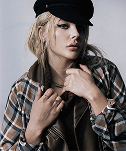
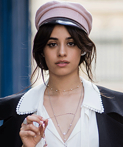
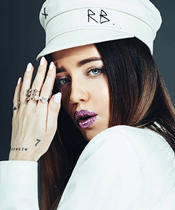

DESIGNER
Ruslan was born in the family of a businessman and a hairdresser. After graduation Baginsky entered the Faculty of Geography at the Ivan Franko University and honestly disaccustomed there for five years.
He always had a soft spot for headwear.
"I often used headwear in the shoot, and I liked it. A lot of time spent on the revision of the shows of Philippe Tracy (50) and the collaborations of Alexander McQueen, until at one moment he thought: "Why should not I do it myself?". In Lviv, there were several ateliers, one of which Ruslan went to learn the basics of hat art. Four years later, Baginsky met Peter Yasinsky (director of the future brand), and they decided to establish their own brand, which is now a year and a half. By the way, there was no start-up capital.

HANDMADE
Ruslan Baginsky team has only 10 people, including himself. They all are multi-tasking, except for Ruslan being engaged in design only.The brand is creating both trendy and timeless pieces: boater hats, homburg hats, fedoras, gamblers and straw hats. Ruslan uses felt imported from Czech Republic, and also leather and straw.
The main feature of his hats is their décor, which can always be changed or altered by the client. Normally it takes 3 days to manufacture one hat.
«All hats are produced in Ukraine. We have our own small workshop. Our strong sides are bright accents and sense of form»
The most popular model oh his baker boy cap is crafted from 100% leather and features a patent leather trim. As well as baker boy caps,crafted from wool and featured tonal embroidery with a black leather trim.

ABOUT THE BRAND
Four years ago only a close circle
of clients and stylists knew about Ruslan Baginskiy. Today his brand’s hats ship all over the world, fashion critics highly showroom to take
a look at the summer season’s hats.
Baginskiy launched his namesake label in 2012 while he was working as a stylist in his hometown of Lviv. The success of Ruslan Baginskiy largely depended on cooperation with the celebrity - you do not want to, but while in the account of some Instagram-star it did not light up, there is nothing to expect for fame.
For him, the lucky star was an acquaintance with Lena Perminova - following Anna Dello Russo, and blogger Aimee Song - Ruslan tells that immediately after she appeared in the hat of his authorship at the Chanel show.
Seeing the increase in requests after its publication, the guys made the right conclusions and started working with celebrities.